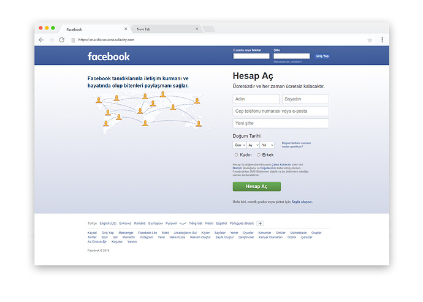

عمل تشطيبات ولمسات أخيرة
في الدرس السابق قمنا بإكمال العمل على مشروع إستنساخ واجهة موقع الفيس بوك و وصلنا للنتيجة التالية:

في درس اليوم سنقوم بعمل تشطيبات ولمسات أخيرة
إضافة الـ Favicon
قمنا بمناقشة إضافة هذه الأيقونة في الدرس الاخير من ورشة إستنساخ موقع المبادرة.

قم أولاً بحفظ الأيقونة بإسم favicon كالتالي:
.

ستجد الكود الذي حصلت منه على رابط الصورة بداخل منطقة الـ head
ثم سنقوم بإضافة الكود التالي في منطقة الـ head:
<link rel="shortcut icon" href="images/favicon.ico">
النتيجة:

تعميم نوع الخط
سأقوم بمسح خاصية font-family: Arial; من كل العناصر وإضافتها بشكل عام للـ body كالتالي:
body{ margin:0; font-family: Arial; }
التأكد من خلو كودنا من الأخطاء وتوافقة مع المعايير القياسية
إختبار كود الـ HTML
سأقوم بنسخ كود الـ HTML للموقع التالي من هنا
.

لا يوجد أخطاء في كودنا ولكن لدينا تحذيرين كالتالي:
.
قمت بإضافة شرطة (-) زائدة في التعليقات الموضحة في الصورة ويطلب مني إزالتها, لذا لنقوم بالتعديلات و إعادة أختبار الكود.
بعد عمل التعديلات المطلوبة حصلنا على كود HTML خالي من الأخطاء والتحذيرات
إختبار كود الـ CSS
سأقوم بنسخ كود الـ CSS للموقع التالي من هنا
.

لا يوجد لدي أي أخطاء
في حال كان لديك أي خطأ فسيتم توضيح مكان الخطأ وسبب الخطأ كالتالي:

الخطأ في:
- السطر: الـ 13
- الكلاس: .container
- سبب المشكلة : فاصلة منقوطة مفقودة قبل الخاصية overflow:

إضافة أكواد الـ Meta
1- إضافة وصف الموقع description :
قم بالبحث في قوقل عن facebook وستجد النتيجة التالية:

هل تلاحظوا الجملة المظلل عليها باللون الأخضر؟ و يا ترى من أين تأتي هذه الجملة؟
حتى نقوم بإضافة هذا الوصف سنستخدم Meta Description Tag كالتالي:
<meta name="description" content="Create an account or log into Facebook. Connect with friends, family and other people you know. Share photos and videos, send messages and get updates.">
تذكر أننا دائماً نضع اكواد الـ Meta في منطقة الـ head
هنا مصدر لتعلم المزيد عن هذا الوسم:
الـ Meta tags عديدة وهي وسوم تقوم بوصف محتوى موقعك بشكل عام ولديها تأثير غير مباشر بتحسين تقييم موقعك على شبكة الإنترنت ما يسمى الـ SEO بإمكانك البحث عنها ومعرفة إستخدام كل تاق وفائدتة بالإضافة للإطلاع على المصدر التالي:
بهذا نكون قد إنتهينا من مشروع تطوير واجهة موقع الفيس بوك أتمنى بأن تكونوا قد إستفدتم وأن تكونوا إستمتعتم بهذه التجربة.
اكواد المشروع على Codepen